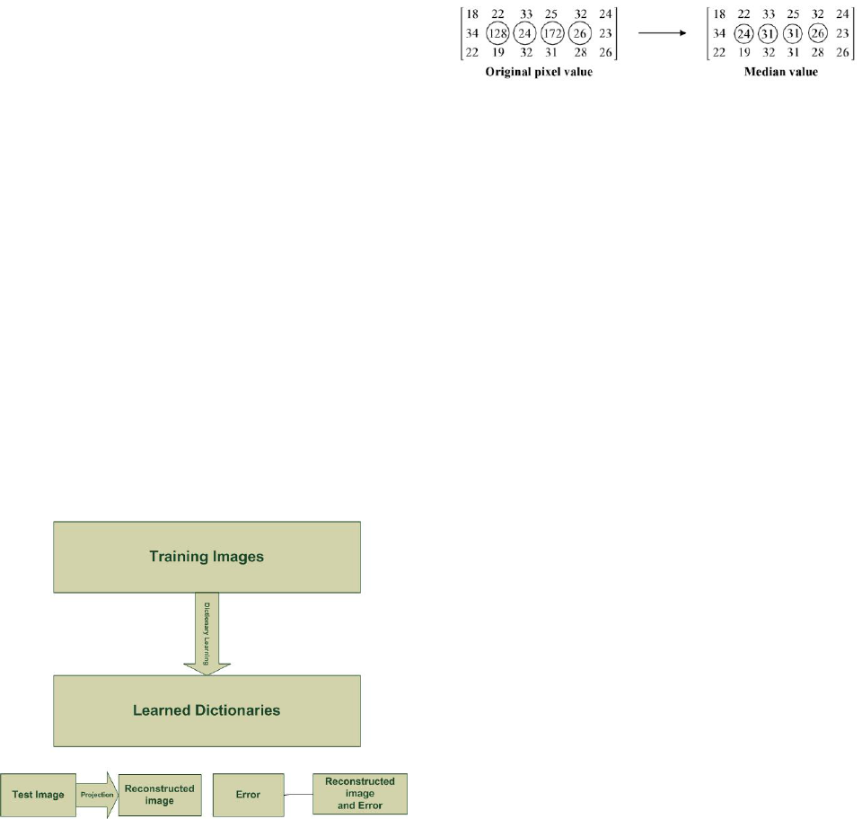

1
Dictionary Based Filtering
Charvik Patel, 1401079, Himanshu Budhia, 1401039, Neel Puniwala, 1401024, Maharsh Patel, 1401109
Abstract—Digital image processing refers to the process of
digital images by means of digital computer. The main application
area in digital image processing is to enhance the pictorial data
for human interpretation. In image some of the unwanted infor-
mation is present that will be removed by several preprocessing
techniques. Filtering helps to enhance the image by removing
noise.Initially By creating Dictionary we will store two form of
matrix.now when We add new image in dictionary we don’t need
to pass image from filter instead we will just Dictionary Learn
form the Previous Dictionary and just map into.
Index Terms—Dictionary Learning,Low-pass filter,Salt-Pepper
Noise,Median filter
I. INTRODUCTION
Basically the idea of Dictionary based filtering is instead
of doing classical convolution every time,we directly take
de–noise image from the dictionary using searching algorithm
and time after time Learning of dictionary is also done by
the same algorithm. We are planning to do low pass or high
pass filtering to de–noise the noisy image. Low pass filter is
used to remove salt and paper noise while high pass filter is
used to separate of edges.We use OpenCV libraries and Python
libraries to implement the low pass filter and to create blocks
of image.
Initially we take some training and filter them by using
classical convolution.Both filtered and non-filtered images are
divided into blocks which are stored in a dictionary.In the
dictionary the key is noisy part of the image and the value is
filtered part of the image.
II. METHODOLOGY
Fig. 1: Methodology[3]
Dr. Mehul Raval
Mr. Vibhav Joshi
III. LITERATURE REVIEW
A. Salt and Pepper Filtering
Salt-and-pepper noise is a form of noise sometimes seen
on images. It presents itself as sparsely occurring white and
black pixels. An effective noise reduction method for this type
of noise is a median filter.[2]
In Median Filter, The original pixel values and the values
replaced by their median are shown side by side below
Fig. 2: Median Filter Conversion[1]
From the above illustration it is clear that the pixal value
’128’ is replaced by the median value 24 and the pixel value
’172’ is replaced by the median value 31. here the values 128
and 172 are entirely different from their neighboring pixels.
when we take the median value,the pixel values which are
totally different from their neighboring pixels are replaced by
a value equal to the neighboring pixel value. hence Median
Filter will reduce salt-pepper noise of image.
B. Sparse Dictionary Learning
[5] Sparse dictionary learning is a representation learning
method which aims at finding a sparse representation of the
input data (also known as sparse coding) in the form of a
linear combination of basic elements as well as those basic
elements themselves. These elements are called atoms and they
compose a dictionary. Atoms in the dictionary are not required
to be orthogonal, and they may be an over-complete spanning
set. This problem setup also allows the dimensionality of the
signals being represented to be higher than the one of the
signals being observed.
One of the key principles of dictionary learning is that the
dictionary has to be inferred from the input data. The emer-
gence of sparse dictionary learning methods was stimulated
by the fact that in signal processing one typically wants to
represent the input data using as few components as possible.
Different Algorithm for Sparse Dictionary Learning are as
follow.
1) Method of optimal directions (MOD)
2) K-SVD[4]
a) K-SVD method learns an over-complete dictionary
from an input image via solving the following
minimization model
b) Limitation:Choosing an appropriate ”dictionary”
for a dataset is a non-convex problem, and K-
SVD operates by an iterative update which does
not guarantee to find the global optimum.